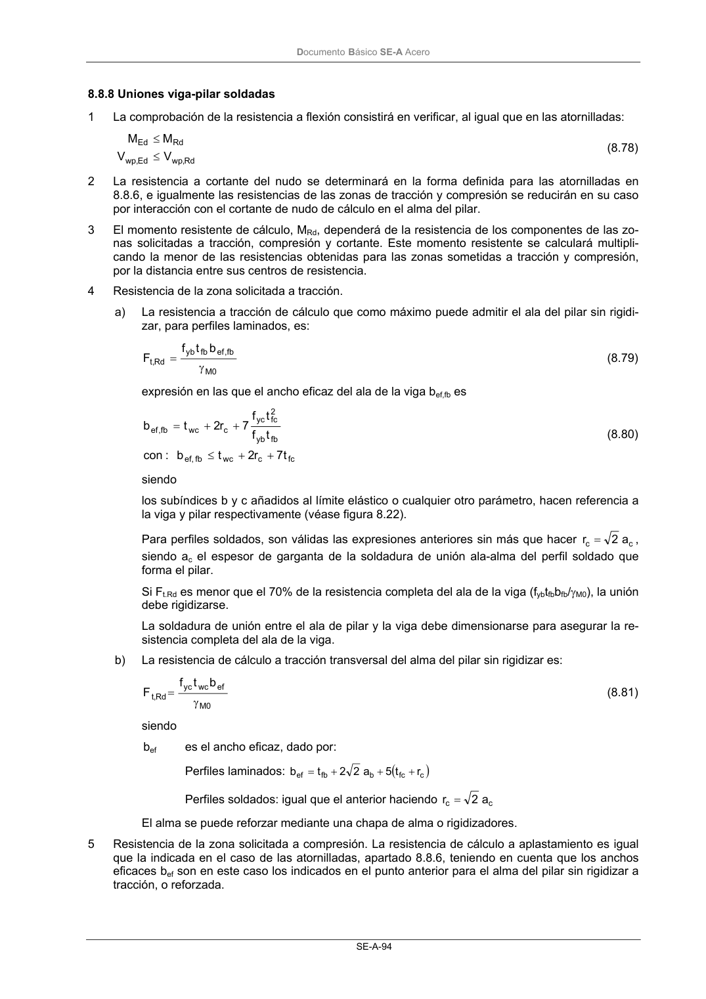

DB-SE-A · 8.8.8 Uniones viga-pilar soldadas · versión 2007-10-23 · capa oficial
Formatos: JSON compacto · Markdown · PDF fuente
Ámbito del documento · texto del ámbito · documento y tablas
ID técnico a0135 · PDF pág. 96-97 · jerarquía no validada por persona · contrastado con el literal de la página 96 (candidato tipográfico); no validado por persona · padre: a0120
8.8.8 Uniones viga-pilar soldadas 1 La comprobación de la resistencia a flexión consistirá en verificar, al igual que en las atornilladas: Rd , wp Ed , wp Rd Ed V V M M ≤ ≤ (8.78) 2 La resistencia a cortante del nudo se determinará en la forma definida para las atornilladas en 8.8.6, e igualmente las resistencias de las zonas de tracción y compresión se reducirán en su caso por interacción con el cortante de nudo de cálculo en el alma del pilar. 3 El momento resistente de cálculo, MRd, dependerá de la resistencia de los componentes de las zo- nas solicitadas a tracción, compresión y cortante. Este momento resistente se calculará multipli- cando la menor de las resistencias obtenidas para las zonas sometidas a tracción y compresión, por la distancia entre sus centros de resistencia. 4 Resistencia de la zona solicitada a tracción. a) La resistencia a tracción de cálculo que como máximo puede admitir el ala del pilar sin rigidi- zar, para perfiles laminados, es: 0 M fb , ef fb yb Rd ,t b t f F γ = (8.79) expresión en las que el ancho eficaz del ala de la viga bef,fb es fc c wc fb ef, fb yb 2 fc yc c wc fb , ef t 7 r 2 t b : con t f t f 7 r 2 t b + + ≤ + + = (8.80) siendo los subíndices b y c añadidos al límite elástico o cualquier otro parámetro, hacen referencia a la viga y pilar respectivamente (véase figura 8.22). Para perfiles soldados, son válidas las expresiones anteriores sin más que hacer c c a 2 r= , siendo ac el espesor de garganta de la soldadura de unión ala-alma del perfil soldado que forma el pilar. Si Ft.Rd es menor que el 70% de la resistencia completa del ala de la viga (fybtfbbfb/γM0), la unión debe rigidizarse. La soldadura de unión entre el ala de pilar y la viga debe dimensionarse para asegurar la re- sistencia completa del ala de la viga. b) La resistencia de cálculo a tracción transversal del alma del pilar sin rigidizar es: 0 M ef wc yc Rd ,t b t f F γ = (8.81) siendo bef es el ancho eficaz, dado por: Perfiles laminados: ( ) c fc b fb ef r t 5 a 2 2 t b + + + = Perfiles soldados: igual que el anterior haciendo c c a 2 r= El alma se puede reforzar mediante una chapa de alma o rigidizadores. 5 Resistencia de la zona solicitada a compresión. La resistencia de cálculo a aplastamiento es igual que la indicada en el caso de las atornilladas, apartado 8.8.6, teniendo en cuenta que los anchos eficaces bef son en este caso los indicados en el punto anterior para el alma del pilar sin rigidizar a tracción, o reforzada. DocumentoBásico SE-A Acero SE-A-95 6 La rigidez inicial y secante rotacional de la unión se determinará como en el caso de las uniones atornilladas, apartado 8.8.6, considerando exclusivamente como componentes básicos de la unión las regiones del alma del pilar a cortante, tracción y compresión, de rigideces Swv, Swt, y Swc respec- tivamente. Figura 8.22 Uniones viga-pilar soldadas

PDF fuente redistribuible: copia fiel enlazada en esta página (SHA256 verificado).